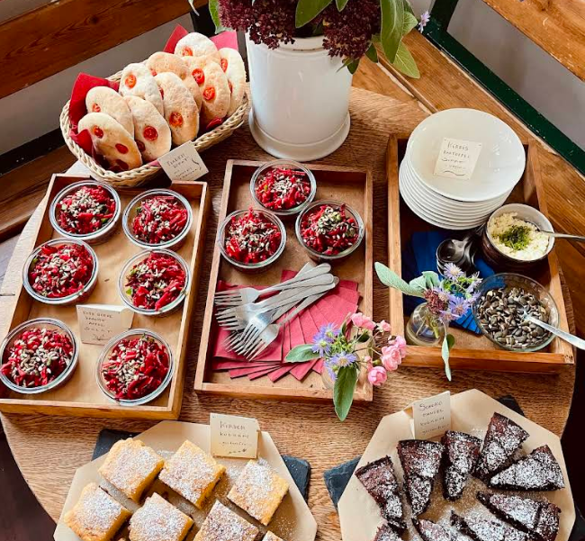
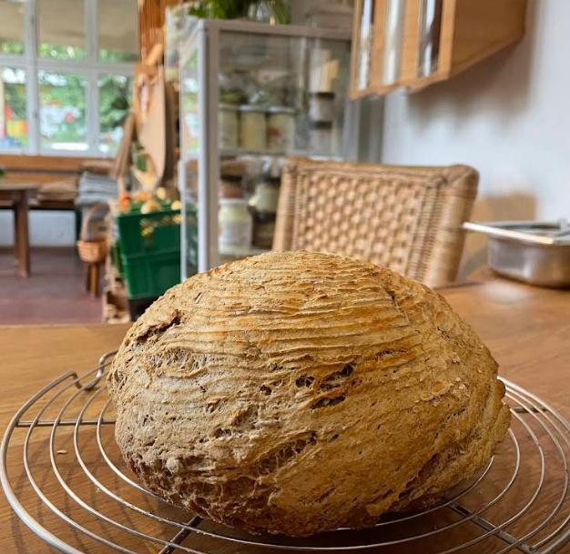
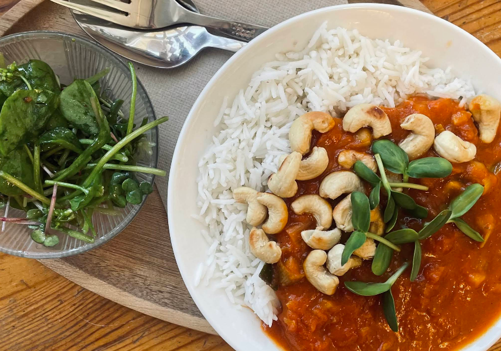
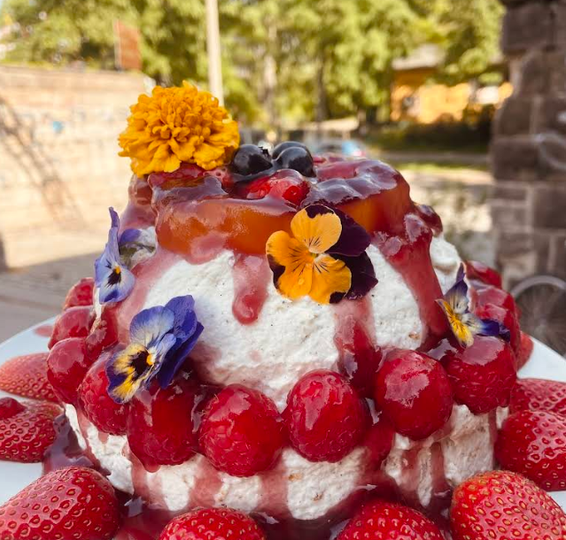
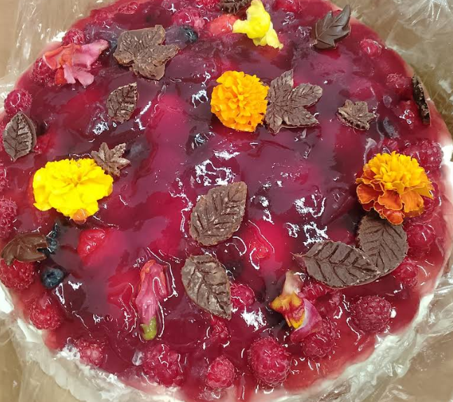
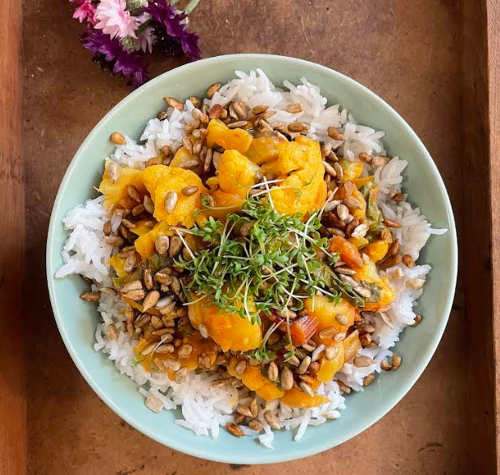
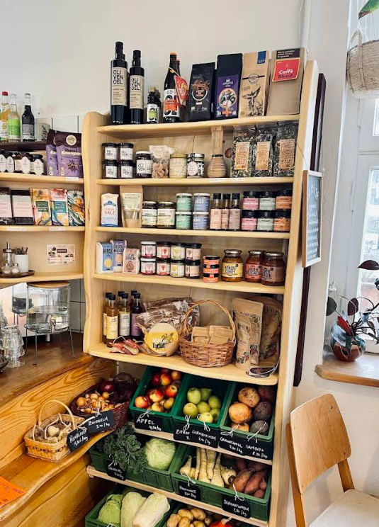
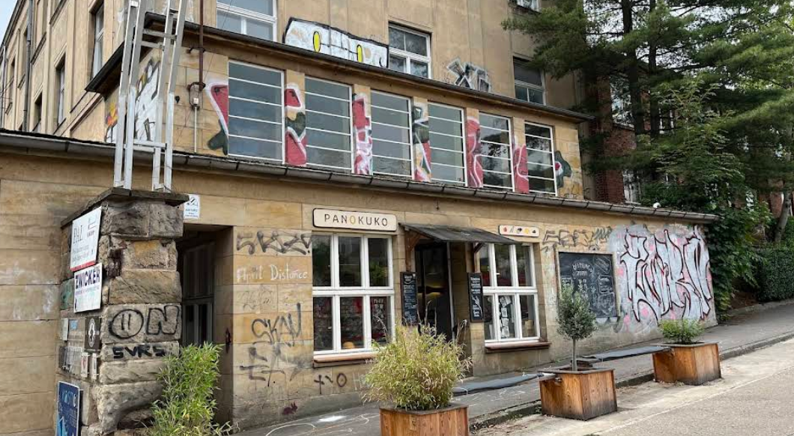
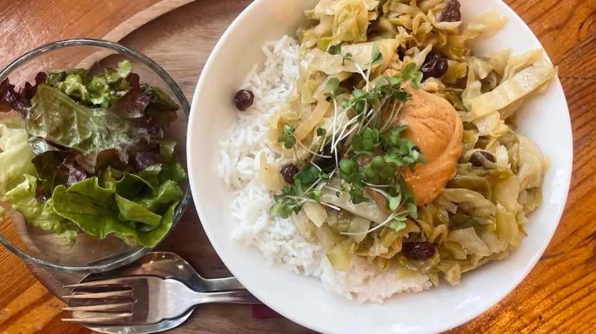

Meistgeliebt
Fladenbrot
Frisch gebacken, herzhaft belegt. Unser meistgeliebtes Gericht.
100% glutenfrei. Die ganze Küche. Jedes Gericht. Ohne Angst.
Bei uns ist nicht eine Sache glutenfrei — sondern alles. Die ganze Backstube, jede Zutat, jede Oberfläche.
Unsere Küche ist zu 100% glutenfrei. Kein Weizen, kein Risiko, keine geteilten Geräte.
Geeignet für Menschen mit Zöliakie. Nicht nur „glutenfrei-freundlich“ — sondern wirklich sicher.
Alles, was du sonst nie haben konntest — frisch gebacken, jeden Tag.
Pflanzliche Milch, vegane Optionen. Für alle, die bewusst genießen.
Unsere Auswahl wechselt täglich. Das hier sind die Dinge, die du bei uns finden kannst — alle glutenfrei, alle frisch.

Frisch gebacken, herzhaft belegt. Unser meistgeliebtes Gericht.

Echtes Sauerteigbrot aus Buchweizenmehl.

Saisonale Mittagsgerichte mit Gemüse aus der Region.

Ja, wirklich. Glutenfreie Donuts und knusprige Waffeln. Frisch.

Auch als Bestellung für deinen Geburtstag.

Glutenfreies Brot aus Maniok — anders, überraschend, großartig.
Unsere Auswahl wechselt täglich. Folge @pano.kuko für die Vitrine von heute.
Eine kleine, frauengeführte Backstube mit Café und Naturkostladen in Leipzig-Plagwitz.
Bei uns ist die gesamte Küche glutenfrei — nicht nur eine Option auf der Karte, sondern alles. Wir backen täglich frisch: Brot, Focaccia, Kuchen, Donuts. Mittags gibt es warme saisonale Gerichte mit Gemüse aus der Region.
Donnerstags kann man eine bunte Gemüsekiste mitnehmen — ohne Abo. Panokuko ist ein Ort zum Wohlfühlen, Vorbeischauen und Wiederkommen.



Regionale Produkte zum Mitnehmen.
Frisches Gemüse, ohne Abo.
Jeden Donnerstag. Komm vorbei, bring deine Wolle mit.
Glutenfreie Torten für deinen Geburtstag — auf Bestellung.
„Ich war heute mit meiner Tochter dort, nachdem ich zufällig im Internet über das Café gelesen hatte. Sie hat seit 14 Jahren Zöliakie und dieser Ort war eine Offenbarung. Wirklich tolles Essen, angenehme Atmosphäre und absolut faire Preise. Die Sandwiches sind sehr empfehlenswert. Der Kaffee und die heiße Schokolade auch und besonders die frischen Donuts. So etwas haben wir glutenfrei noch nie irgendwo gegessen. Wir werden dort auf jeden Fall regelmäßig vorbeischauen.“
„Super leckere glutenfreie Fladenbrote und ein Umgang, der einfach gut tut. Als wir die Abholung verschwitzt haben, wurden sie uns sogar gebracht. Vielen Dank – ihr seid wirklich toll!“
“Little cafe/bakery completely glutenfree, small prices, tastes sooo delicious!”
„Sehr leckeres Fladenbrot mit besonders leckerem Belag, alles glutenfrei hier, herrlich!“
“Great gluten free baker. A real enrichment for Leipzig and everyone who suffers from celiac disease.”
“100% gluten-free bakery. Very nice place.”
Spiel mit dem Look der Seite.